In order to calculate the total force acting on the tip, one has to differentiate the total energy, Eq. (4), with respect to the position of the sphere,
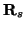
. Since we are interested only in the force acting in the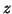
-direction, it is sufficient to study the dependence of the energy on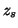
. There will be three contributions to the force. The second contribution to the force comes from the van der Waals interaction [10]. Finally, the interatomic interactions lead to a force which is calculated by differentiating the shell-model energy (the first term in Eq. (4)). Therefore,
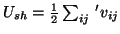
is the shell model energy. We recall that the summation here is performed over all atoms in regions 1 to 4. Only positions of the atoms in region 1 depend directly on since atoms in other regions are allowed to relax. However, their equilibrium positions,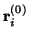
, determined by the minimisation of the energy of Eq. (4), will depend indirectly on at equilibrium,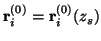
. Then, we also recall that the electrostatic energy,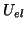
, depends only on positions of atoms, as well as on the tip position .Let us denote the positions of atoms by a vector
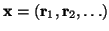
. The total energy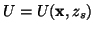
, where the direct dependence on comes from relaxed tip atoms of the shell model energy,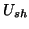
, and from the electrostatic energy, . In equilibrium the total energy is a minimum: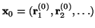
be the solution of Eq. (13). Then, since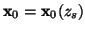
, we have for the force: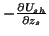
, is equal to the sum of all -forces acting on atoms in region 1 due to all shell-model interactions, since only these atoms are responsible for the dependence on in the energy . Therefore, finally we have: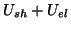
. Then calculate the shell-model force,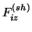
, acting on every fixed tip atom in the -direction as well as the electrostatic contribution to the force given by the last term in Eq. (15). The van der Waals force between macroscopic tip and sample does not depend on the geometry of atoms and can be calculated just once for every given .